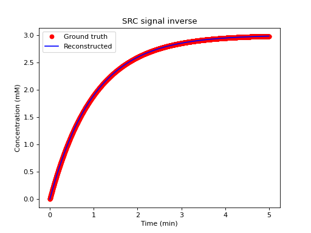

dcmri.conc_src#
- dcmri.conc_src(S, TC, T10, r1=0.005, n0=1)[source]#
Concentration of a saturation-recovery sequence with a center-encoded readout.
- Parameters:
S (array-like) – Signal in arbitrary units.
TC (float) – Time (sec) between the saturation pulse and the acquisition of the k-space center.
T10 (float) – baseline T1 value in sec.
r1 (float, optional) – Longitudinal relaxivity in Hz/M. Defaults to 0.005.
n0 (int, optional) – Baseline length. Defaults to 1.
- Returns:
Concentration in M, same length as S.
- Return type:
np.ndarray
Example
We generate some signals from ground-truth concentrations, then reconstruct the concentrations and check against the ground truth:
>>> import matplotlib.pyplot as plt >>> import numpy as np >>> import dcmri as dc
First define some constants:
>>> T10 = 1 # sec >>> TC = 0.2 # sec >>> r1 = 0.005 # Hz/M >>> FA = 15 # deg
Generate ground truth concentrations and signal data:
>>> t = np.arange(0, 5*60, 0.1) # sec >>> C = 0.003*(1-np.exp(-t/60)) # M >>> R1 = 1/T10 + r1*C # Hz >>> S = dc.signal_free(100, R1, TC, FA) # au
Reconstruct the concentrations from the signal data:
>>> Crec = dc.conc_src(S, TC, T10, r1)
Check results by plotting ground truth against reconstruction:
>>> plt.plot(t/60, 1000*C, 'ro', label='Ground truth') >>> plt.plot(t/60, 1000*Crec, 'b-', label='Reconstructed') >>> plt.title('SRC signal inverse') >>> plt.xlabel('Time (min)') >>> plt.ylabel('Concentration (mM)') >>> plt.legend() >>> plt.show()
(
Source code,png,hires.png,pdf)
{kind=link}
{kind=link}